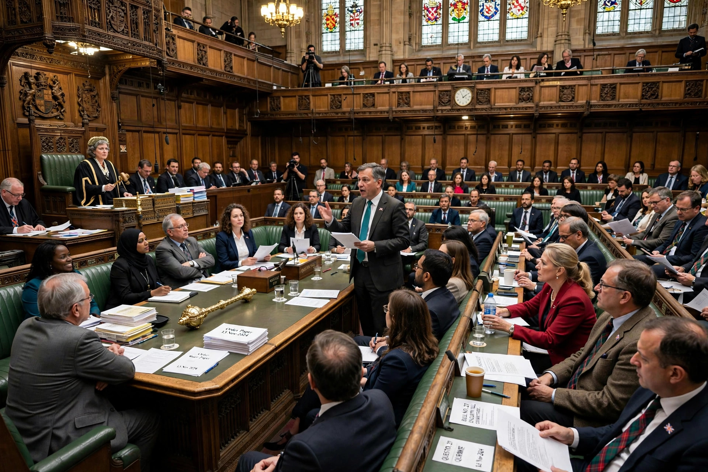

Prorogation

Prorogation in the United Kingdom and several Commonwealth realms is the formal ending of a parliamentary session, discontinuing sittings of the legislature until it is next summoned. Prorogation is distinct from both adjournment, which merely suspends a sitting, and dissolution, which ends a parliament entirely and triggers a general election. When Parliament is prorogued, most public business that has not been completed — including most bills — ordinarily falls, although mechanisms exist for carrying bills over between sessions.
Mechanics
In the United Kingdom, prorogation is effected by the monarch on the advice of the Prime Minister, announced in the House of Lords by royal commission or by proclamation. Parliament typically sits in a series of sessions of about a year, each opened by a State Opening and King's Speech and ended by prorogation. In Canada and Australia, the equivalent power is exercised by the Governor General on ministerial advice, and has at times been politically controversial where a government facing defeat in the legislature has sought prorogation to avoid a confidence vote.
The 2019 United Kingdom prorogation
Prorogation attracted worldwide attention in 2019, when Prime Minister Boris Johnson advised Queen Elizabeth II to prorogue Parliament for five weeks in the run-up to the United Kingdom's scheduled departure from the European Union. In R (Miller) v The Prime Minister and Cherry v Advocate General for Scotland, the Supreme Court of the United Kingdom unanimously held that the advice was unlawful because it frustrated or prevented, without reasonable justification, Parliament's ability to carry out its constitutional functions, and that the prorogation itself was null and of no effect. Parliament accordingly resumed sitting the following day.
See also
Ministerial responsibility · Ministry (government department) · Secretary of state
Categories: Parliamentary procedure · Westminster system